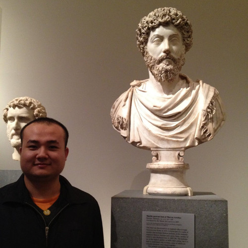

Xiang Zhang, Ph.D. Student
Computer Science Department
Courant Institute of Mathematical Sciences
New York University
xiang.zhang (a t) nyu.edu
60 5th Ave, Room 501, New York, NY 10003
I am a fifth year Ph.D. student under the advisement of professor Yann LeCun with an interest in machine learning, including deep learning, numerical optimization, and some learning theory. Before being a Ph.D. student, I already spent 2 years as an M.S. student at NYU, during which time I participate in some research projects. Before coming to the U.S., I was an undergraduate student at the School of Computer Science and Technology,
Tianjin University, conducting research in computational photography advised by professor Shiguang
Liu.
I am actively looking for an industrial research or post-doc position starting in October 2018 or later, especially in applying deep learning to natural language understanding, reasoning and generation. Here is a resume.
News
Refereed Publications
Google Scholar profile
- Xiang Zhang, Yann LeCun. Universum Prescription: Regularization using Unlabeled Data. Thirty-First AAAI Conference on Artificial Intelligence (AAAI 2017). Slides.
- Jesse Dodge, Andreea Gane, Xiang Zhang, Antoine Bordes, Sumit Chopra, Alexander Miller, Arthur Szlam, Jason Weston. Evaluating Prerequisite Qualities for Learning End-to-End Dialog Systems. International Conference on Learning Representations (ICLR) 2016. Datasets.
- Xiang Zhang, Junbo Zhao, Yann LeCun. Character-level Convolutional Networks for Text Classification. Advances in Neural Information Processing Systems 28 (NIPS 2015). Poster. Datasets. Code. Errata.
- Pierre Sermanet, David Eigen, Xiang Zhang, Michaël Mathieu, Rob Fergus, Yann LeCun. OverFeat: Integrated Recognition, Localization and Detection using Convolutional Networks. International Conference on Learning Representations (ICLR) 2014.
- Shiguang Liu, Xiang Zhang. Image Colorization Based on Texture Map. Journal of Electronic Imaging, 2013, Volume 22, Issue 1, 01311.
- Shiguang Liu, Xiang Zhang. Automatic Grayscale Image Colorization using Histogram Regression. Pattern Recognition Letters, 2012, Volume 33, Issue 13, Pages 1673-1681.
- Shiguang Liu, Hanqiu Sun, Xiang Zhang. Selective color transferring via ellipsoid color mixture map. Journal of Visual Communication and Image Representation, 2012, Volume 23, Issue 1, Pages 173-181.
- Xiang Zhang, Ce Yu. Fast n-point Correlation Function Approximation with Recursive Convolution for Scalar Fields. In IEEE Cloud Computing Technology and Science (CloudCom) CloudCom 2011, Pages 634-639.
- Xiang Zhang, Shiguang Liu, Texture Transfer in Frequency Domain. IEEE 2011 Sixth International Conference on Image and Graphics(ICIG), Pages 123-128.
- Shiguang Liu, Xiang Zhang, Jingting Wu, Jizhou Sun, Qunsheng Peng, Gray-scale Image Colorization based on the Control of Single-parameter. Journal of Image and Graphics (In Chinese), 2011, Volume 16(7), Pages 1297-1302.
Technical Reports
arXiv profile
Thesis
Blog Posts
This page contains errata for the paper “Xiang Zhang, Junbo Zhao, Yann LeCun. Character-level Convolutional Networks for Text Classification. Advances in Neural Information Processing Systems 28 (NIPS 2015)“. The paper on arXiv server will be updated accordingly, but the paper in NIPS proceedings may stay as is. Some of the errata may also apply to our earlier technical report “Xiang Zhang, Yann LeCun. Text Understanding from Scratch. arXiv 1502.01710.”
The upper index for the convolution and max-pooling module should be \( \lfloor (l-k)/d \rfloor + 1 \) instead of \( \lfloor (l-k+1)/d \rfloor \).
Today I saw a post from Mark Zuckerberg on his project of automating a home. That great project is so awesome that it could probably change the future of human living. Along with the post there are arguments that common sense may be obtained through unsupervised learning. But personally I do not buy these arguments, at least not in the current form of unsupervised learning.
The intuition that a model can obtain common sense through unsupervised process is not straightforward to me.
Here is one simple question: how to make machines learn to sum up two numbers? Of course, this problem largely depends on how the numbers are represented. If they are represented in some finite-precision float-point format, a simple regression where both weights are one would solve the problem. But that’s not what I mean here. What I mean is, given the symbolic representation of numbers (i.e., each number is a sequence of digits), how could a machine learn to sum them up?
Finally finished reading Roger Penrose’s classic book “The Emperor’s New Mind: Concerning Computers, Minds and The Laws of Physics”. As a junior Ph.D. student who hopes to have a career in the research of artificial intelligence (machine learning or deep learning more precisely), I was reading this book as a touch on the opposite of the belief that intelligence is achievable by machines. Apart from several of his dramatic tones towards mocking A.
Medical study shows that two consciousness could exist in the same body, if the connection between the left and the right brain hemispheres are damaged. Does this medical fact tells us something more about intelligence? My opinion is, it is an evidence for the hypothesis that certain deficiency in low-level communication is a precondition for intelligence. I know that sounds crazy or perhaps hard to understand, but please allow me to explain.
Update June 8th 2015: The dataset duplication issues are fixed in the latest revision of our technical report. Some of our large-scale datasets became smaller than before, but the general conclusion in the technical report still holds. The information below is retained for your reference, although they are no longer valid. We are working on extending comparisons with stronger baseline models and releasing the datasets as soon as possible.
Google’s April fool surprise: reading characters in reverse order (https://com.google/).
It happened to be the case that the character order in Crepe (https://github.com/zhangxiangxiao/Crepe) is also reversed.
The original thought was that aligning the end of a document to a fixed position (in this case at the beginning) could make it easier for the fully-connected layers to associate meaning with the ending context window.
This may have the effect of biasing classification towards the end reading of a text, which has a somewhat distant relationship with how recurrent neural network representation can be used for classification, since it decays the influence of document at the beginning but not so much at the end.
This blog summarizes an answer I posted to a question regarding what kinds of research are there for deep learning, in Zhihu, a Chinese equivalence of Quora. Surprisingly, that answer drew a lot of attention from many students and young researchers in China and it is currently ranked the second best answer in the subcategory of “deep learning”. I hope the summarization here could offer my bit of thought to a broader audience by translating that answer to English.